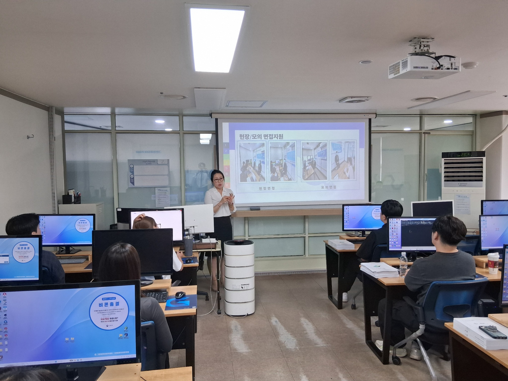

0
취업 상담
성남그린컴퓨터아카데미 취업지원 총괄 실장으로서 훈련생 한 명 한 명의 가능성을 발견하고, 현실적인 취업 전략으로 연결합니다. 상담이 부담이 아니라 다음 행동을 찾는 시간이 되도록 돕습니다.
취업 상담
모의면접 진행
기업 매칭
협약 기업
취업 특강

저는 단순히 취업을 연결하는 사람이 아니라, 훈련생의 경험과 강점을 직무 언어로 정리하고 기업이 원하는 인재상과 연결하는 일을 합니다.
취업률보다 중요한 것은 스스로 납득할 수 있는 선택과 오래 성장할 수 있는 방향이라고 생각합니다.
현재 상태를 진단하고, 강점과 직무를 연결해 서류·면접·기업 추천까지 단계별로 함께합니다.
희망직무·준비도·고민 확인
경험 속 역량과 성향 정리
채용공고와 인재상 분석
직무 중심 구조와 문장 개선
경험 근거와 지원동기 강화
실무·인성 질문 답변 훈련
적합 기업과 채용기회 연결
면접 복기와 입사 준비 지원
개인의 역량과 성향을 분석해 현실적인 진로 방향을 제안합니다.
채용담당자가 강점을 빠르게 이해할 수 있도록 내용을 구조화합니다.
실전 질문과 답변법을 익히고 구체적인 개선점을 제공합니다.
협약기업과 채용기회를 직무 적합도에 맞춰 연결합니다.
직무별 현업 정보와 채용 준비 노하우를 제공합니다.
입사 후 적응과 경력 방향까지 지속적으로 점검합니다.
“실장님 덕분에 방향을 잡을 수 있었고, 면접에서 자신감을 가질 수 있었습니다.
“기업 분석과 면접 질문 정리가 특히 도움이 됐습니다. 준비해야 할 것이 명확해졌습니다.
“포트폴리오부터 면접까지 세심하게 피드백해 주셔서 끝까지 포기하지 않을 수 있었습니다.
취업에 대한 고민, 이력서 피드백, 면접 준비 등 현재 가장 어려운 지점부터 편하게 말씀해 주세요.